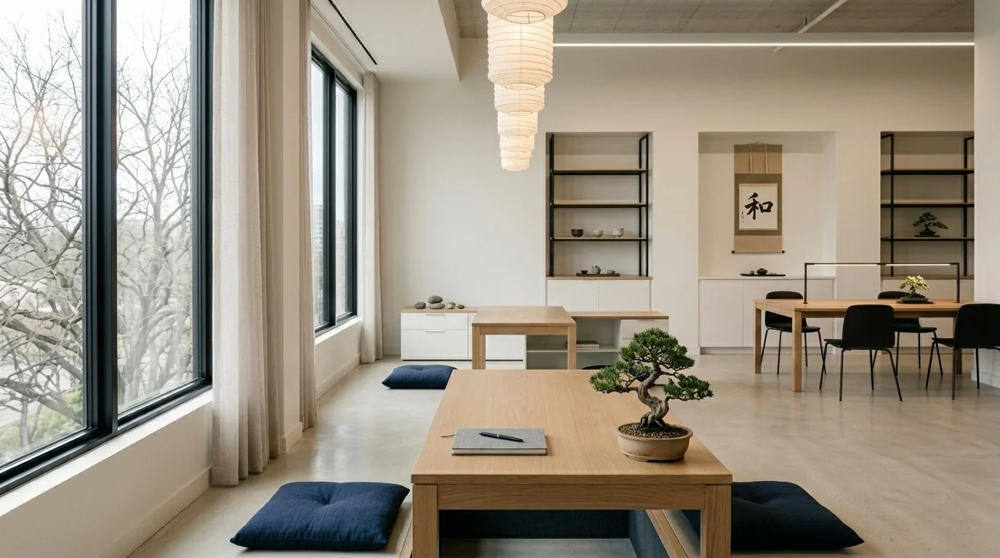
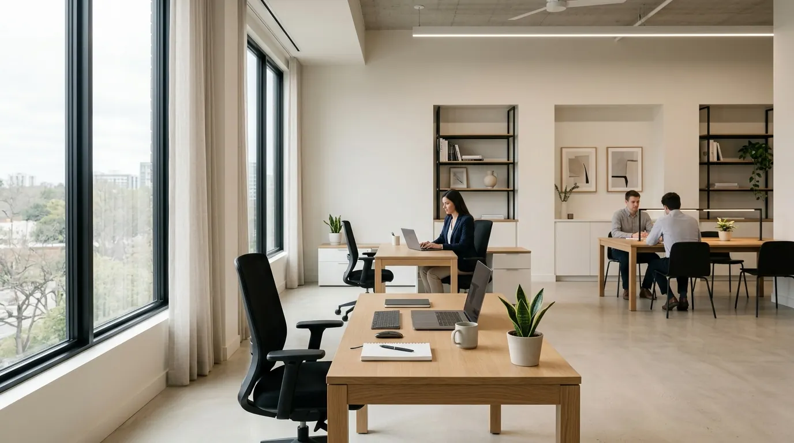

Dunia desain interior kantor terus berkembang pesat. Setelah era pandemi mengubah cara kita bekerja secara fundamental, tahun 2026 menghadirkan pendekatan baru yang memadukan estetika premium, kenyamanan ergonomis, dan keberlanjutan lingkungan. Kantor bukan lagi sekadar tempat duduk dan bekerja — ia adalah cerminan identitas perusahaan dan katalis produktivitas karyawan.
Dalam artikel ini, kami merangkum 5 tren desain interior kantor modern yang paling dominan di 2026, lengkap dengan panduan implementasi agar Anda dapat mengadopsinya di ruang kerja Anda sendiri.
"Kantor terbaik adalah yang membuat karyawan ingin datang — bukan yang memaksa mereka hadir."
1 Open Space dengan Zona Fleksibel
Tata letak open space dengan zona kolaborasi dan zona fokus yang terpisah namun tetap terhubung secara visual.
Konsep open space bukan hal baru, namun di 2026 pendekatan ini mengalami evolusi signifikan. Bukan lagi deretan meja panjang tanpa privasi, melainkan ruang yang dibagi menjadi zona-zona fungsional: area fokus, zona kolaborasi, ruang brainstorming, dan lounge santai.
Pendekatan ini menghargai bahwa setiap karyawan memiliki ritme kerja berbeda — ada yang butuh ketenangan, ada yang berkembang dalam interaksi tim. Furnitur modular dan partisi bergerak menjadi kunci fleksibilitas ini.
Menurut studi terbaru dari Leesman Index, karyawan yang bekerja di kantor dengan zona kerja beragam melaporkan tingkat kepuasan 34% lebih tinggi dibanding yang bekerja di layout tradisional.
- Gunakan meja rapat modular yang bisa dikonfigurasi ulang sesuai kebutuhan
- Pisahkan zona dengan perbedaan lantai dan pencahayaan, bukan hanya dinding
- Sediakan minimal 3 tipe area kerja: fokus individual, kerja tim kecil, dan kolaborasi besar
- Pertimbangkan rasio 60% workstation tetap dan 40% hot-desk / zona fleksibel
2 Aksen Material Kayu & Tekstur Hangat

Meja direktur berbahan kayu solid dengan finishing natural oil — hangat, elegan, dan tahan lama.
Estetika warm minimalism mendominasi 2026. Respons terhadap era digital yang dingin dan steril, desainer kini memilih palet material yang memberi kehangatan: kayu solid, veneer oak, batu travertine, rotan, dan kulit alami. Kombinasi ini menciptakan suasana yang terasa profesional namun tidak kaku.
Warna yang dipilih pun bergeser — dari putih murni ke off-white, krem, greige, dan cokelat tanah. Warna-warna ini terbukti secara psikologis mengurangi stres dan meningkatkan rasa nyaman di tempat kerja.
Di Indonesia, tren ini sangat relevan mengingat ketersediaan kayu jati dan mahoni berkualitas tinggi. Furnitur berbahan kayu solid tidak hanya indah, tetapi juga investasi jangka panjang yang nilainya terjaga.
- Pilih meja direktur kayu solid sebagai focal point ruangan
- Kombinasikan material kayu dengan elemen logam matte untuk nuansa kontemporer
- Gunakan finishing natural oil atau wax — bukan cat gloss — untuk mempertahankan tekstur asli
- Batasi palet warna: maksimal 3 warna utama + 1 aksen untuk keselarasan visual
3 Partisi Akustik Multifungsi

Panel akustik berlapis kain yang sekaligus berfungsi sebagai elemen dekorasi dan pembatas zona kerja.
Salah satu keluhan terbesar di kantor open-plan adalah kebisingan. Di 2026, solusinya bukan dengan menutup semua ruangan — melainkan dengan partisi akustik yang cerdas dan estetik. Panel peredam suara kini hadir dalam berbagai bentuk: panel felt, divider meja berlapis kain, booth akustik portable, hingga rak buku yang juga meredam suara.
Yang membedakan tren ini adalah penggabungan fungsi: partisi tidak hanya memisahkan ruang, tetapi juga berfungsi sebagai papan tulis, display produk, atau elemen dekorasi.
Studi dari Journal of Environmental Psychology menunjukkan bahwa level kebisingan tinggi dapat menurunkan produktivitas kognitif hingga 66%. Investasi pada akustik kantor adalah investasi pada hasil kerja tim Anda.
- Targetkan NRC (Noise Reduction Coefficient) minimal 0,65 untuk panel akustik
- Letakkan booth akustik dekat area telepon dan video call yang sering digunakan
- Gunakan rak buku open-shelf berisi buku sebagai peredam suara alami
- Kombinasikan panel dinding dengan karpet area untuk hasil maksimal
4 Desain Biophilic — Alam Masuk ke Dalam Kantor

Dinding hijau vertikal dan tanaman meja menciptakan atmosfer alami yang meningkatkan kesejahteraan karyawan.
Biophilic design adalah pendekatan yang mengintegrasikan elemen alam ke dalam lingkungan buatan. Di kantor, ini berarti lebih dari sekadar meletakkan pot tanaman di sudut. Tren 2026 mendorong integrasi mendalam: dinding hijau vertikal, skylight alami, material batu ekspos, dan pencahayaan yang mensimulasikan siklus matahari.
Riset dari Human Spaces melaporkan bahwa karyawan di lingkungan dengan elemen alam mengalami peningkatan well-being 15% dan kreativitas 6%.
Untuk iklim tropis Indonesia, pendekatan biophilic sangat natural — memanfaatkan tanaman lokal seperti monstera, pakis, sirih gading, dan bambu yang mudah dirawat di lingkungan indoor.
- Mulai dari tanaman meja yang tidak butuh banyak sinar: ZZ plant, sansevieria, atau pothos
- Gunakan pot berbahan terracotta atau batu yang selaras dengan estetika kayu furnitur
- Pastikan ventilasi dan pencahayaan alami cukup
- Pertimbangkan jasa plant maintenance profesional agar tanaman terawat
5 Ergonomi Premium sebagai Standar Baru

Kursi direktur ergonomis modern: memadukan tampilan sculptural premium dengan fitur penyangga postur yang dapat disesuaikan.
Di 2026, ergonomi bukan lagi fitur premium — melainkan standar minimum yang diharapkan. Tren ini mencakup kursi dengan penyangga lumbar adjustable, meja sit-stand, monitor arm, footrest, dan keyboard tray.
Data dari WHO menunjukkan bahwa nyeri punggung bawah adalah penyebab utama absensi kerja secara global. Investasi pada furnitur ergonomis yang tepat dapat menurunkan klaim kesehatan, meningkatkan produktivitas, dan mengurangi turnover karyawan.
Yang menarik di 2026 adalah bagaimana ergonomi bertemu estetika: kursi direktur kini hadir dengan desain sculptural yang indah sekaligus mendukung postur optimal.
- Prioritaskan kursi dengan penyangga lumbar adjustable, sandaran tangan 4D, dan kedalaman dudukan yang dapat diatur
- Pertimbangkan kursi direktur ergonomis untuk level manajemen dan kursi staff ergonomis untuk operasional
- Adakan sesi ergonomi assessment bersama ahli K3
- Implementasikan "standing break" — berdiri 5–10 menit setiap jam
Siap Wujudkan Kantor Modern Pilihan Anda?
Dapatkan solusi tata letak furnitur dan interior kantor terbaik yang disesuaikan dengan kebutuhan serta anggaran perusahaan Anda. Tim ahli kami siap membantu Anda dari perencanaan hingga pemasangan!